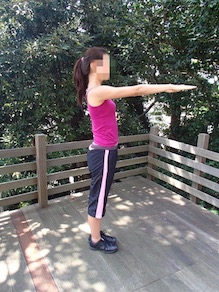

セクシーなくびれをつくる！STEP5
ツイストダイアゴナル(斜め曲げ)・アンクルタッチ
① 床で仰向けになり、両膝を９０度にまげて太ももを床と垂直に上げる。
② 両腕を膝に伸ばし三角形をつくる。
③ 膝の位置は固定して、対角の外くるぶしにタッチする気持ちで
上体をひねり起こし戻る。
スクイーズ・ニーレズ
① 両脚を腰幅に開いてまっすぐ立ち、両腕を肩幅でまっすぐ前に伸ばす。
② 鼻から息を吸い、口から吐き、腰椎を曲げずにお腹をへこませてしぼむ。
③ その姿勢を保ち、左右交互に腕をつけるつもりで、膝を高く引き上げる。

スクイーズ・バードドック
① 手を肩、膝を股関節の真下について四つん這いに。
② 対角の肘と膝を近づけ、鼻から息を吸い、口から吐き
腰椎を曲げずにお腹を凹ませてしぼむ。
③ 骨盤と両肩を床に平行に保ち、近づいた手足を対角に伸ばす、左右変えて
Copyright (C) 2015 @muscleam1